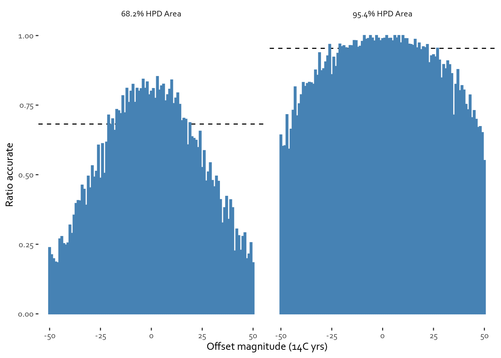
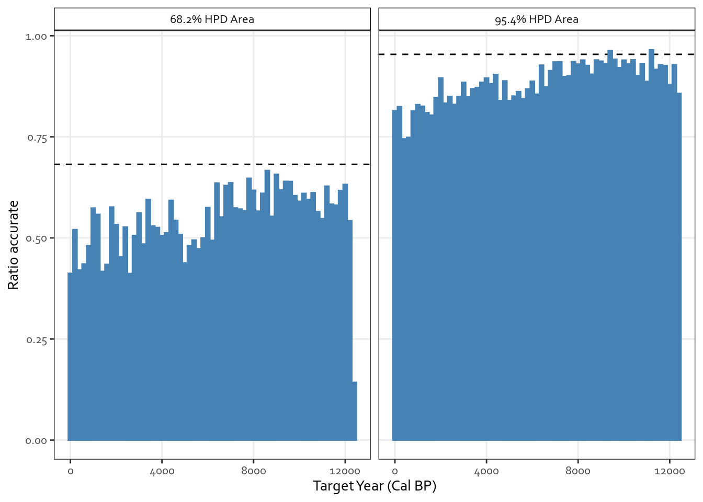
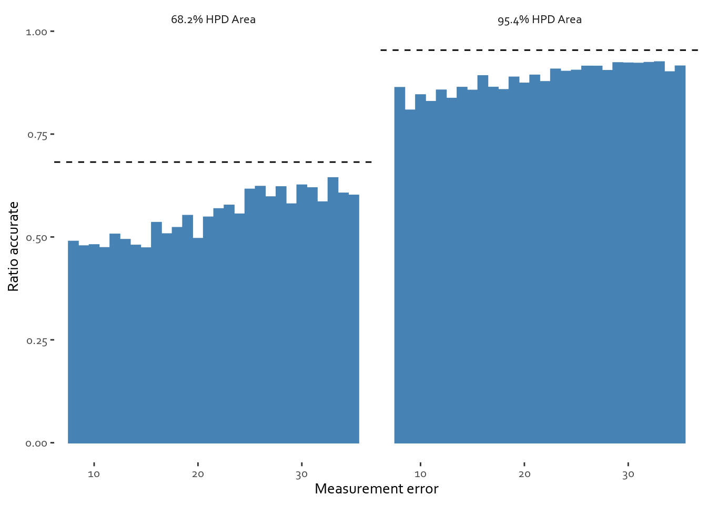
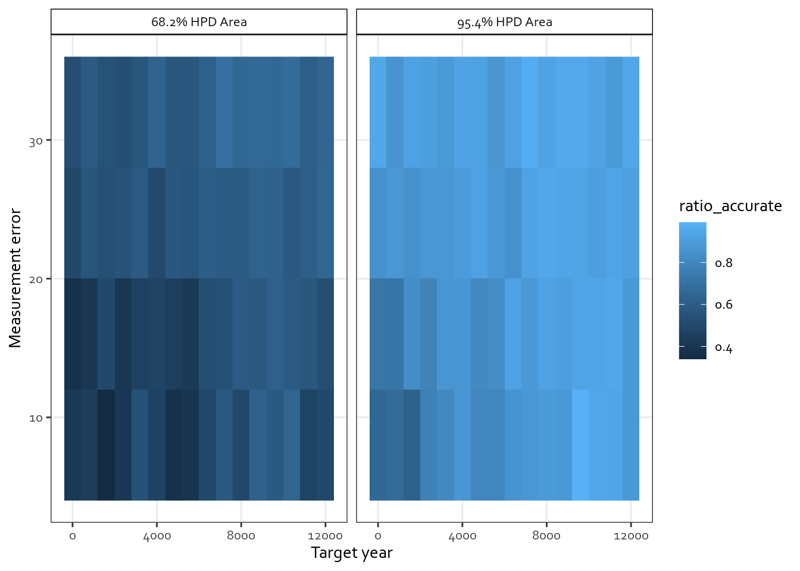

Choosing models for singles: 14C Power and Sensitivity (weeks 2-3)
14C Power/Sensitivity
Research Design
Project Log
Author
Pete
Published
July 4, 2023
Welcome back everyone! This took a little longer to put together than anticipated. Truth is, as usual with data projects, there was always the nagging little voice arguing that we should follow the data a little longer… so what’s up on the project?
The plan for week 2 was to have a look at the old project archive and start figuring out what can be done. As discussed in the previous post, the project itself is all about running thousands of simulated radiocarbon dates and modelling them to then be able to suggest data-driven decisions for actual sampling. The simulations all got done before I went off to fight the pandemic two years ago, alongside some tools for data exploration. So I took some time over the past couple of weeks digging through those old project folders, choosing a particular set of simulations to focus on and taking things forward from there. This week we’ll focus on the actual stuff that was left behind from the academic days, as well as beginning to explore the simulated data for single radiocarbon calibrations.
Things left behind
So the project itself covered three types of radiocarbon models: single calibrated dates, radiocarbon wiggle-match dates, and relatively simple “sequence” models.
The first type of model is just Bayesian calibration of a 14C determination to a calendar date (see this post on calibration curious what that is).
The second type of model is a Bayesian wiggle-match date - a bunch of radiocarbon measurements where we know how much time elapsed between the samples - most often gets used for tree-rings (you can find the model ran in a spreadsheet here if you want the details).
The third type of model were “Sequences” - groups of dates where we have some idea of contemporaneity and ordering of the dates, but no information on their exact chronological relationship. So, for example, we know that bone A got deposited before bone B, but no idea how many years apart. Unlike single calibrations and wiggle-match dates, these kinds of models come with multiplicity of parameters and in general use MCMC. If you want to know more, check out the intro on the Historic England website.
For each of three kinds of models, I’ve run several different kinds of simulations. Some focused on particular time periods, others on how results changed with different calibration curves, while other still were concerned with obtaining large mass of simulated measurements over different time periods. Looking through the project archive I found the last category most interesting, and thought I’d start with it. However, before going right to the bit that I wanted to do for two years now - studying the wiggle-match date models, I though I’d begin with single calibrations to brush up on some key tools (and practice new ones).
Single calibrations: how did they get simulated and how many I’ve got?
Before we move forward you might ask, how did the simulated radiocarbon dates get simulated. The procedure is quite simple - you can find it outlined in code in this file here. In essence, we begin with a know calibration curve, we choose a systematic offset at random. Remember, large part of the project is to check how sensitive we are to such offsets - by the way I set the offset to between -50 and 50 14C year - which is at the limit of difficult to spot lab screw-ups combined with weird atmospheric effects. We then get a vector of measurement errors - the known uncertainty around our simulated measurements. We then choose a point at random one the calibration curve, check the expected 14C age, shift it by the offset, and draw a random number from a normal distribution with a standard deviation corresponding to the measurement error. These can then get passed to the calibration program OxCal via the command line. Once we get the calibrated results we check whether the 68.2% and 95.4% HPD areas estimated by OxCal contain the known target dates.
Looking through the project archive, this leg included 10,000 simulations from across the tree-ring based part of the calibration curve - looking at the period from zero to 12,300 Before Present (cal BP). The first step was to re-acquaint myself with the data. Thankfully there was a Shiny App that I built two years ago for just that purpose…
So what are the interesting things about these simulations?
There are a few things that can be said about the main singles data set, but the things that I found relevant had to do specifically with the accuracy of the simulations under different offsets. A note on notation before going forward:
Target years are in Calibrated Years BP (Cal BP) - normal calendar time, counted backwards from 1950. Yes, the future is now.
Offset magnitude and measurement uncertainties are counted in radiocarbon years (14C yrs). These are not actual time units, but rather transformed estimates of radiocarbon concentration. Think of them as standardized units for this type of analysis. Yes, I know, it is far from straightforward, but you can do it!
Code
##Loading the data - use URL to github - better reproducibility and no duplication.singles_data_url <-"https://raw.githubusercontent.com/pete-jacobsson/14C-power-sensitivity/main/simulation_results/singles_011_results.csv"##Thank you to https://lokraj.me/post/download-github-data/ for the tutorial!singles_data <-read_csv(url(singles_data_url))
Offset magnitude and accuracy
Code
## Do the transforms necessary and plot the figures## Want to have the bars in the range from zero to one, for easy compare with HPD areassingles_data %>%mutate(offset_magnitude =round(offset_magnitude) ) %>%group_by(offset_magnitude) %>%summarize(`68.2% HPD Area`=mean(accuracy_68),`95.4% HPD Area`=mean(accuracy_95) ##Naming to work for figures ) %>%pivot_longer(!offset_magnitude, names_to ="hpd_area", values_to ="ratio_accurate") %>%mutate(line_for_nominal =if_else(str_detect(hpd_area, "68"), 0.682, 0.954)) %>%ggplot(aes(x = offset_magnitude, y = ratio_accurate)) +geom_hline(aes(yintercept = line_for_nominal), linetype ="dashed") +geom_bar(stat ='identity', color ="steelblue", fill ="steelblue") +facet_wrap(~hpd_area) +theme_bw() +labs(x ="Offset magnitude (14C yrs)",y ="Ratio accurate" ) +theme(panel.grid.minor =element_blank(),strip.background =element_rect(color="black", fill="white" ),text =element_text(family ="Corbel") )

As expected for both 95.4% and 68.2% HPD areas we can see that there is some area of grace with regards to systematic offsets - and that measurements with very small offsets can perform better than the calculated HPD area implies. This is important, as it suggests that we can use some kind of a logistic model to estimate how much of a systematic offset the single determinations can take before results become unreliable.
Accuracy through time
Code
singles_data %>%mutate(target_year = plyr::round_any(target_year, 200) ) %>%group_by(target_year) %>%summarize(`68.2% HPD Area`=mean(accuracy_68),`95.4% HPD Area`=mean(accuracy_95) ##Naming to work for figures ) %>%pivot_longer(!target_year, names_to ="hpd_area", values_to ="ratio_accurate") %>%mutate(line_for_nominal =if_else(str_detect(hpd_area, "68"), 0.682, 0.954)) %>%ggplot(aes(x = target_year, y = ratio_accurate)) +geom_hline(aes(yintercept = line_for_nominal), linetype ="dashed") +geom_bar(stat ='identity', color ="steelblue", fill ="steelblue") +facet_wrap(~hpd_area) +theme_bw() +labs(x ="Target Year (Cal BP)",y ="Ratio accurate" ) +theme(panel.grid.minor =element_blank(),strip.background =element_rect(color="black", fill="white" ),text =element_text(family ="Corbel") )

There might be differences in how offsets affect accuracy based on where we are on the calibration curve; in more recent millennia we tend to get less accurate results. This implies that the sensitivity levels we thought of calculating in the previous section may be different depending on where we are in time.
The more you scatter, the more often you hit
Code
## Do the transforms necessary and plot the figures## Want to have the bars in the range from zero to one, for easy compare with HPD areassingles_data %>%mutate(measurement_error =round(measurement_error) ) %>%group_by(measurement_error) %>%summarize(`68.2% HPD Area`=mean(accuracy_68),`95.4% HPD Area`=mean(accuracy_95) ##Naming to work for figures ) %>%pivot_longer(!measurement_error, names_to ="hpd_area", values_to ="ratio_accurate") %>%mutate(line_for_nominal =if_else(str_detect(hpd_area, "68"), 0.682, 0.954)) %>%ggplot(aes(x = measurement_error, y = ratio_accurate)) +geom_hline(aes(yintercept = line_for_nominal), linetype ="dashed") +geom_bar(stat ='identity', color ="steelblue", fill ="steelblue") +facet_wrap(~hpd_area) +theme_bw() +labs(x ="Measurement error",y ="Ratio accurate" ) +theme(panel.grid.minor =element_blank(),strip.background =element_rect(color="black", fill="white" ),text =element_text(family ="Corbel") )

It seems that measurement error has some impact, with greater measurement uncertainties providing more grace. On a conceptual level this makes sense - the less precise the measurement, the greater the chance that the output model will hit the target date by accident. Having said that, I would expect that for measurements with very small systematic offsets, high-precision measurements should do just fine.
`summarise()` has grouped output by 'target_year'. You can override using the
`.groups` argument.

Exploring the old Shiny App also highlighted one other interesting interaction. It seems like more precise measurements suffer more in light of systematic offsets in more recent millennia (we can see it by tiles getting darker in the lower-right hand corner of the figures below). This, alongside the other observation about more recent dates being less robust to systematic offsets, suggests that where we are in time may have an impact on the accuracy of single calibrations.
Where next
Initial explorations of the simulation data give us some idea of what to pursue:
We can have a look at how different offsets affect measurement precision
We can explore the temporal dimension
We can explore impacts of measurement precision
The next step, in the next installment will consist of exploring those factors through modelling, with the purpose of bringing us closer to the fundamental question of this leg of the project - how much can the measurements be offset before the results become unreliable. At this stage we know that the when needs to be taken into account and that something about the calibration curve might have an impact. We know that the curve is anything but monotonous, with plenty of features attesting to past states of the sun and the Earth’s geomagnetic field. We also know that the precision of the calibration curve becomes less and less the further back we go in time. Hence, our key challenge moving forward will be to figure out just how much those additional variables matter for estimating the range of systematic offsets radiocarbon determinations can take before the calibrated dates become less accurate than what the HPD area would imply.
See you next week! Or two weeks from now, or however this will pan out.